here() starts at C:/Users/jingy/Documents/DACSS-601/jingyi.github.io
library("ggthemes")library(gt)
Overview
My final project mainly analyzes the health conditions among children under 18 based on some particular demographics from 1997 to 2018.
Data
The data needed for analysis is downloaded from data.gov. The original data has been published from Centers for Disease Control and Prevention in Jun 2021.
This data set consists of information about the health conditions among children under 18 years old based on particular population characteristics. It can help get information regarding the illness that is prevalent among minors, the percentage of children for each illness based on the different demographic characteristics, and more.
health <-read_csv("~/DACSS-601/Final Project/Health_conditions_among_children_under_age_18__by_selected_characteristics__United_States.csv")health %>%print(n=10, width =Inf)
# A tibble: 2,744 × 16
INDICATOR
<chr>
1 Health conditions among children under age 18
2 Health conditions among children under age 18
3 Health conditions among children under age 18
4 Health conditions among children under age 18
5 Health conditions among children under age 18
6 Health conditions among children under age 18
7 Health conditions among children under age 18
8 Health conditions among children under age 18
9 Health conditions among children under age 18
10 Health conditions among children under age 18
PANEL PANEL_NUM
<chr> <dbl>
1 Current asthma among persons under 18 years 1
2 Current asthma among persons under 18 years 1
3 ADHD among persons under 18 years 3
4 ADHD among persons under 18 years 3
5 ADHD among persons under 18 years 3
6 Current asthma among persons under 18 years 1
7 Current asthma among persons under 18 years 1
8 Current asthma among persons under 18 years 1
9 Current asthma among persons under 18 years 1
10 Current asthma among persons under 18 years 1
UNIT UNIT_NUM STUB_NAME STUB_NAME_NUM STUB_LABEL
<chr> <dbl> <chr> <dbl> <chr>
1 Percent of children, crude 1 Total 0 Under 18 years
2 Percent of children, crude 1 Total 0 Under 18 years
3 Percent of children, crude 1 Age 1 10-17 years
4 Percent of children, crude 1 Age 1 10-17 years
5 Percent of children, crude 1 Age 1 10-17 years
6 Percent of children, crude 1 Total 0 Under 18 years
7 Percent of children, crude 1 Total 0 Under 18 years
8 Percent of children, crude 1 Total 0 Under 18 years
9 Percent of children, crude 1 Total 0 Under 18 years
10 Percent of children, crude 1 Total 0 Under 18 years
STUB_LABEL_NUM YEAR YEAR_NUM AGE AGE_NUM ESTIMATE SE FLAG
<dbl> <chr> <dbl> <chr> <dbl> <dbl> <dbl> <chr>
1 0 1997-1999 1 Under 18 years 0 NA NA ...
2 0 2000-2002 2 Under 18 years 0 NA NA ...
3 1.22 1997-1999 1 10-17 years 2.2 7.6 0.2 <NA>
4 1.22 2000-2002 2 10-17 years 2.2 9 0.3 <NA>
5 1.22 2003-2005 3 10-17 years 2.2 8.9 0.3 <NA>
6 0 2003-2005 3 Under 18 years 0 8.7 0.2 <NA>
7 0 2006-2008 4 Under 18 years 0 9.3 0.2 <NA>
8 0 2007-2009 5 Under 18 years 0 9.4 0.2 <NA>
9 0 2008-2010 6 Under 18 years 0 9.5 0.2 <NA>
10 0 2009-2011 7 Under 18 years 0 9.5 0.2 <NA>
# ℹ 2,734 more rows
Clean the data set
Overview
The data set includes 16 columns. The column “INDICATOR” consists of the information about the whole data set, which is “Health conditions among children under age 18” and is a characteristic variable. The column “PANEL” is a characteristic variable and includes information about various health issues. The column “PANEL_NUM” represents the code for different health issues. The column “UNIT” indicates the number in the data set focused on percentage. “UNIT_NUM” refers to the code representing the characteristic variables in the “UNIT” column. “STUB_NAME” includes different characteristics for the respondents, like age, race, sex, etc., and the “STUB_NAME_NUM” shows the codes related to them. “STUB_LABEL” means the sub-variables related to the characteristics, like different age groups, female and male for the gender, and column “STUB_LABEL_NUM” involves the number representing them. “YEAR” includes information about different year stages, “YEAR_NUM” represents them, “AGE” and “AGE_NUM” include different age stages and numbers represent them, “ESTIMATE” is the number percent of children, “SE” means the standard error. In the “FLAG” column, “—” means the data is not available, and “*” means the estimate might not be reliable. A document provided by the Centers for Disease Control and Prevention (CDC) can provide more information.
To clean the data, delete the columns that include some repeat information, like the number representing the variables, the columns that only include one piece of information, like the “INDICATOR” column, and the rows that contain the not available cells, are necessary. Besides, arranging the table through “PANEL” and “YEAR,” renaming the column, and using the information in the “SE” column (standard error) to calculate the upper and lower percentage information will make the table more in order and easier to understand.
Not Hispanic or Latino: Black or African American only
108
23.30%
Not Hispanic or Latino: White only
108
23.30%
Under 18 years
82
30.68%
Uninsured
108
23.30%
White only
108
23.30%
1997-1999
135
18.637%
2000-2002
140
17.971%
2003-2005
186
13.527%
2006-2008
184
13.674%
2007-2009
185
13.600%
2008-2010
186
13.527%
2009-2011
187
13.455%
2010-2012
187
13.455%
2011-2013
188
13.383%
2012-2014
187
13.455%
2013-2015
188
13.383%
2014-2016
188
13.383%
2015-2017
188
13.383%
2016-2018
187
13.455%
As the summary for the variable “percentage” cannot clearly reflect the data variation, which does not help to define using mean or median for future analysis, further calculating the mean, median, standard deviation, and range based on various illnesses and demographic characteristics is necessary.
As all the numbers fit in the range mean+/-3(standard deviation), there is no extreme value in the data set, which means using the mean to analyze the percentage of children provided in the data set is appropriate.
Research questions
Which illness is most common? In this particular illness, how does the percentage for demographic characteristics change over time, and What do the demographic characteristics look like?
Which percentage of illness increased most over time? How does the percentage of demographic characteristics change over time in this particular illness?
Based on the “insurance” demographic characteristics, what is the trend of various illnesses over time? Can we define which illness is most common among those in “insured” status and those not?
Can we define the trend of the percentage of illness based on the poverty rate over time? Which illness is most common in various poverty rates?
Question 1
Question 1.1: Which illness is most common?
health_clean %>%group_by(illness)%>%summarise(mean=mean(percentage), mean_high=mean(percentage_high), mean_low=mean(percentage_low))%>%ungroup()%>%mutate(mean=mean/100, mean_high= mean_high/100, mean_low= mean_low/100)%>%mutate(labels=scales::percent(mean))%>%ggplot(aes(illness, mean, fill=illness))+geom_col(position ="dodge")+geom_errorbar(aes(ymin=mean_low,ymax=mean_high))+scale_x_discrete(name="Illness")+scale_y_continuous(limits=range(0,0.3), label = scales::percent, name ="Percentage of mean")+scale_fill_discrete(name="Illness")+ ggthemes::theme_few()+theme(axis.text.x =element_text(angle=90))+theme(legend.position ="bottom", legend.key.size =unit(0.1, 'cm'), legend.text =element_text(size=7), legend.title =element_text(size=10))+geom_text(aes(label = labels), size=3, vjust=-.5)+labs(title ="Mean For Various Illness")+theme(plot.title =element_text(hjust=0.5))
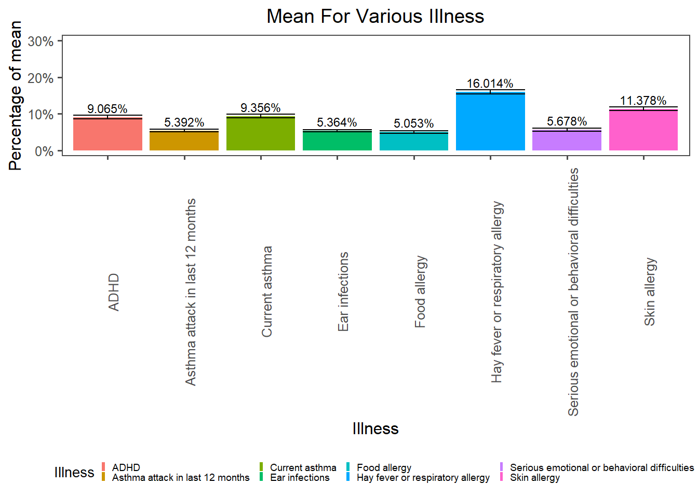
According to the graphic above, “Hay fever or respiratory allergy among persons under 18 years” is the most common illness.
Question 1.2 In this particular illness, how does the percentage for demographic characteristics change over time?
health_clean %>%filter(str_detect(illness,"respiratory"))%>%mutate(percentage= percentage/100)%>%ggplot(aes(year_number, percentage, col=sub_name))+geom_line()+facet_wrap(vars(characteristics), labeller =label_wrap_gen(width=25))+ ggthemes::theme_few()+scale_x_continuous(n.break=8, name="Year Number")+scale_y_continuous(label = scales::percent, name ="Percentage of characteristics")+scale_color_discrete(name="Sub-name of characteristics")+guides(col=guide_legend(nrow=6))+theme(legend.position ="bottom", legend.key.size =unit(0.1, 'cm'), legend.text =element_text(size=7), legend.title =element_text(size=6))+labs(title ="Percentages for various characteristics-Hay fever or respiratory allergy")+theme(plot.title =element_text(hjust=0.5))+theme(strip.text =element_text(size=7))
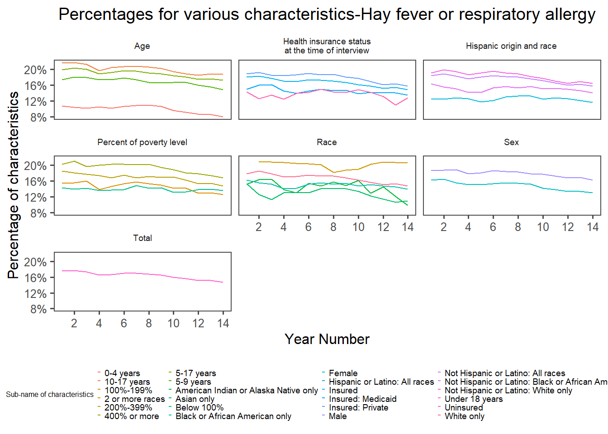
According to the graphic, the trends for all characteristics overtime are going down, except the “Two or more races” in the “Race” category.
Questions 1.3 What do the demographic characteristics look like?
Insurance Level
health_clean %>%filter(str_detect(illness,"respiratory")&str_detect(characteristics, "insurance"))%>%group_by(sub_name)%>%summarise(mean=mean(percentage),mean_high=mean(percentage_high), mean_low=mean(percentage_low))%>%ungroup()%>%mutate(mean=mean/100, mean_high= mean_high/100, mean_low= mean_low/100)%>%mutate(labels=scales::percent(mean))%>%ggplot(aes(sub_name, mean, fill=sub_name))+geom_col(position ="dodge")+geom_errorbar(aes(ymin=mean_low,ymax=mean_high))+scale_x_discrete(name="Insurance Status")+scale_y_continuous(limits=range(0,0.25),label = scales::percent, name ="Percentage of mean")+scale_fill_discrete(name="Health insurance status at the time of interview")+ ggthemes::theme_few()+theme(legend.position ="bottom")+geom_text(aes(label = labels), size=5, vjust=-1)+labs(title ="Mean percentage for various insuranced categories and uninsured category-Hay fever or respiratory allergy")+theme(plot.title =element_text(hjust=0.5))
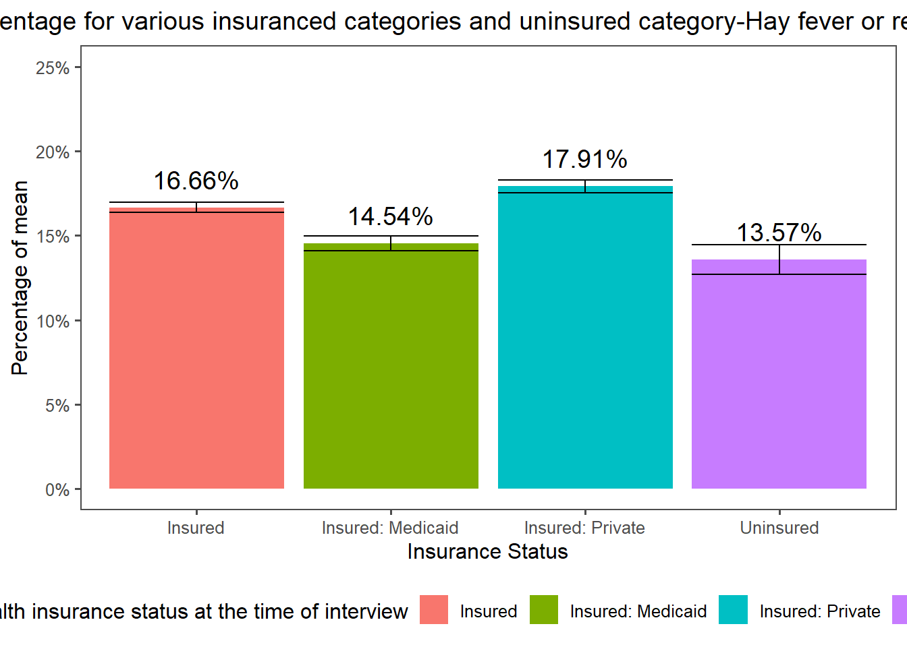
According to the graphic, the “Insured: Private” have the highest percentage of mean.
health_clean %>%filter(str_detect(illness,"respiratory")&str_detect(characteristics, "insurance"))%>%mutate(sub_name=str_remove(sub_name, ": Medicaid$|: Private$"))%>%group_by(sub_name)%>%summarise(mean=mean(percentage),mean_high=mean(percentage_high), mean_low=mean(percentage_low))%>%ungroup()%>%mutate(mean=mean/100, mean_high= mean_high/100, mean_low= mean_low/100)%>%mutate(labels=scales::percent(mean))%>%ggplot(aes(sub_name, mean, fill=sub_name))+geom_col(position ="dodge")+scale_x_discrete(name="Insurance Status- Insured and Uninsured")+geom_errorbar(aes(ymin=mean_low,ymax=mean_high))+scale_y_continuous(limits=range(0,0.25),label = scales::percent, name ="Percentage of mean")+scale_fill_discrete(name="Health insruance status")+geom_errorbar(aes(ymin=mean_low,ymax=mean_high))+ ggthemes::theme_few()+theme(legend.position ="bottom")+geom_text(aes(label = labels), size=5, vjust=-1)+labs(title ="Mean percentage for insured and uninsured-Hay fever or respiratory allergy")+theme(plot.title =element_text(hjust=0.5))
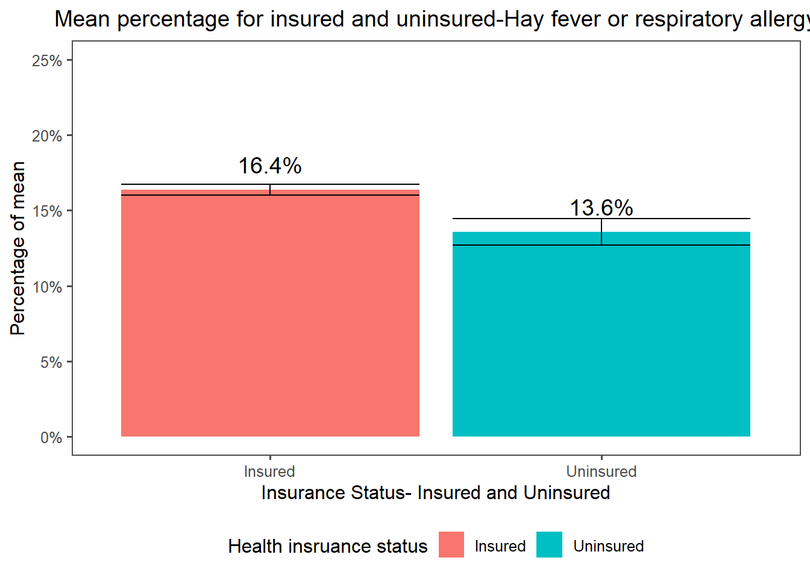
According to the graphic, mean percentage for children who are in the Insured status is higher than those who are not.
Poverty Level
health_clean %>%filter(str_detect(illness,"respiratory")&str_detect(characteristics , "poverty"))%>%mutate(sub_name=factor(sub_name,levels=c("Below 100%", "100%-199%", "200%-399%","400% or more"))) %>%group_by(sub_name)%>%summarise(mean=mean(percentage), mean_high=mean(percentage_high), mean_low=mean(percentage_low))%>%ungroup()%>%mutate(mean=mean/100, mean_high= mean_high/100, mean_low= mean_low/100)%>%mutate(labels=scales::percent(mean))%>%ggplot(aes(sub_name, mean, fill=sub_name))+geom_col(position ="dodge")+geom_errorbar(aes(ymin=mean_low,ymax=mean_high))+scale_x_discrete(name="Percent of poverty level")+scale_y_continuous(limits=range(0,0.3),label = scales::percent, name ="Percentage of mean")+scale_fill_discrete(name="Percent of poverty level")+ ggthemes::theme_few()+theme(legend.position ="bottom")+geom_text(aes(label = labels), size=5, vjust=-1)+labs(title ="Mean percentage for various poverty level-Hay fever or respiratory allergy")+theme(plot.title =element_text(hjust=0.5))
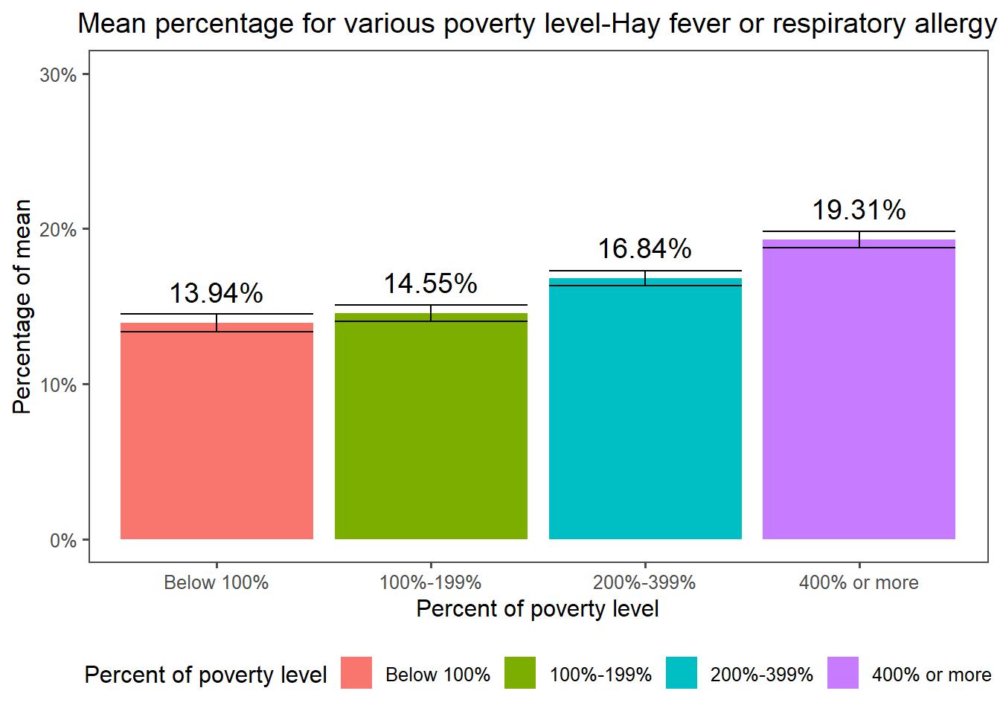
According to the graphic, “400% or more” have the highest percentage rate.
Race
health_clean %>%filter(str_detect(illness,"respiratory")&str_detect(characteristics, "Race"))%>%group_by(sub_name)%>%summarise(mean=mean(percentage), median=median(percentage), mean_high=mean(percentage_high), mean_low=mean(percentage_low))%>%ungroup()%>%mutate(mean=mean/100, median= median/100, mean_high= mean_high/100, mean_low= mean_low/100)%>%mutate(labels=scales::percent(mean))%>%ggplot(aes(sub_name, mean, fill=sub_name))+geom_col(position ="dodge")+scale_x_discrete(name="Race")+scale_y_continuous(limits=range(0,0.3),label = scales::percent, name ="Percentage of mean")+scale_fill_discrete(name="Race")+ ggthemes::theme_few()+guides(fill=guide_legend(nrow=3))+theme(axis.text.x =element_text(angle=90))+theme(legend.position ="bottom")+geom_text(aes(label = labels), size=5, vjust=-1)+labs(title ="Mean percentage for various race-Hay fever or respiratory allergy")+theme(plot.title =element_text(hjust=0.5))
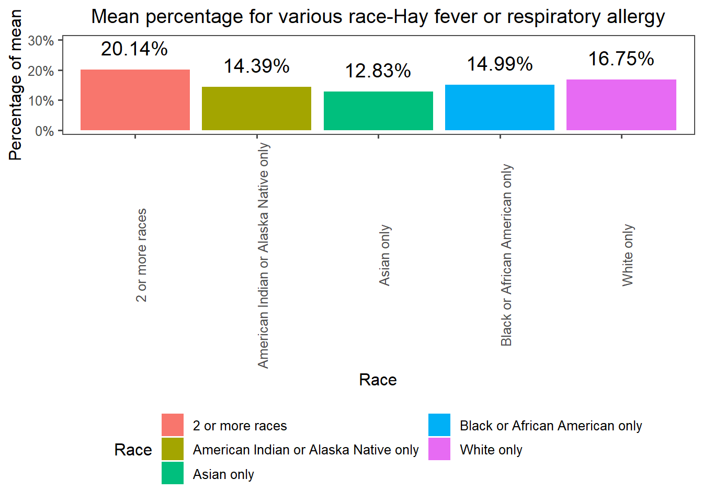
According to the graphic, “400% or more” have the highest percentage rate.
Sex
health_clean %>%filter(str_detect(illness,"respiratory")&str_detect(characteristics, "Sex"))%>%group_by(sub_name)%>%summarise(mean=mean(percentage), mean_high=mean(percentage_high), mean_low=mean(percentage_low))%>%ungroup()%>%mutate(mean=mean/100, mean_high= mean_high/100, mean_low= mean_low/100)%>%mutate(labels=scales::percent(mean))%>%ggplot(aes(sub_name, mean, fill=sub_name))+geom_col(position ="dodge")+geom_errorbar(aes(ymin=mean_low,ymax=mean_high))+scale_x_discrete(name="Sex")+scale_y_continuous(limits=range(0,0.3),label = scales::percent, name ="Percentage of mean")+scale_fill_discrete(name="Sex")+ ggthemes::theme_few()+theme(axis.text.x =element_text(angle=90))+theme(legend.position ="bottom")+geom_text(aes(label = labels), size=5, vjust=-1)+labs(title ="Mean percentage for Sex-Hay fever or respiratory allergy")+theme(plot.title =element_text(hjust=0.5))
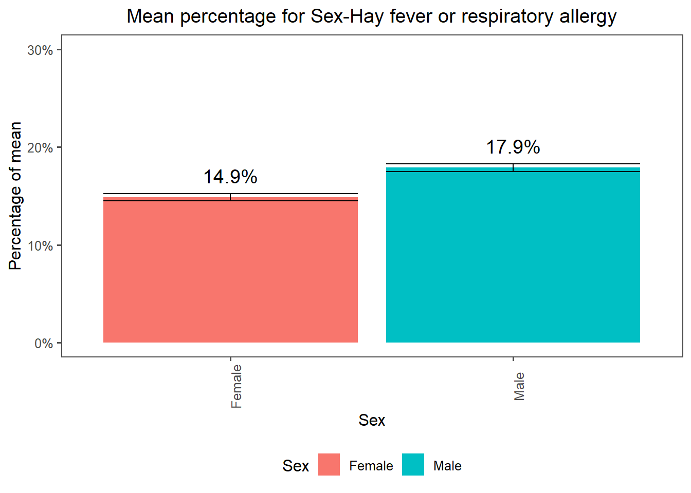
According to the graphic, the “Male” have higher mean percentage.
According to the graphic, the “10-17 years old” have higher mean percentage.
##Question 2
Question 2.1 Which percentage of illness increased most over time?
health_clean %>%group_by(illness, year, `year_number`)%>%summarise(mean=mean(percentage), median=median(percentage))%>%ungroup()%>%mutate(mean=mean/100, median= median/100)%>%mutate(labels=scales::percent(mean))%>%ggplot(aes(year_number, mean, col= illness))+geom_path()+ ggthemes::theme_few()+scale_x_continuous(n.break=8, name="Year Number")+scale_y_continuous(label = scales::percent, name ="Percentage of illness")+scale_color_discrete(name="Illness")+guides(col=guide_legend(nrow=4))+theme(legend.position ="bottom")+labs(title ="Trends For Various Illness overtime")+theme(plot.title =element_text(hjust=0.5))+theme(strip.text =element_text(size=7))
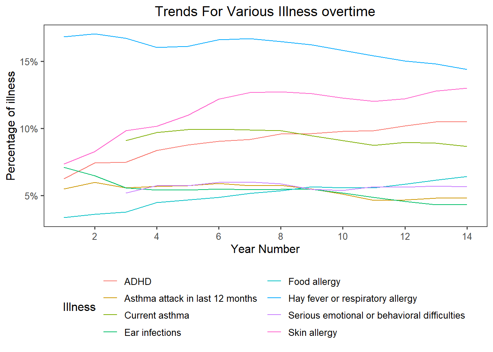
According to the graphic,Skin Allergy is the illness that increase most overtime.
Question 2.2 How does the percentage of demographic characteristics change over time in this particular illness?
health_clean %>%filter(str_detect(illness,"Skin"))%>%mutate(percentage= percentage/100)%>%ggplot(aes(year_number, percentage, col=sub_name))+geom_line()+facet_wrap(vars(characteristics), labeller =label_wrap_gen(width=25), scale="free")+ ggthemes::theme_few()+scale_x_continuous(n.break=8, name="Year Number")+scale_y_continuous(label = scales::percent, name ="Percentage of characteristics")+scale_color_discrete(name="Sub-name of characteristics")+guides(col=guide_legend(nrow=6))+theme(legend.position ="bottom", legend.key.size =unit(0.1, 'cm'), legend.text =element_text(size=7), legend.title =element_text(size=6))+labs(title ="Percentages for various characteristics")+theme(plot.title =element_text(hjust=0.5))+theme(strip.text =element_text(size=7))
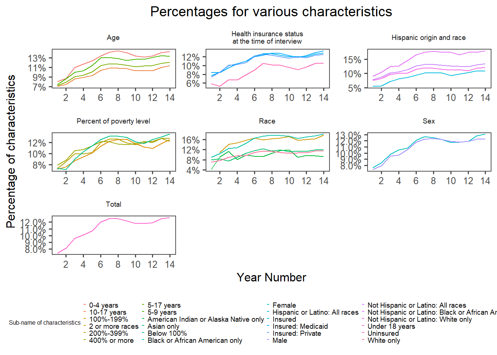
According to the graphic, almost all the demographic characteristics are in the increased trend overtime.
Question 3
Question 3.1 Based on the “insurance” demographic characteristics, what is the trend of various illnesses over time?
health_clean %>%filter(str_detect(characteristics,"insurance")) %>%mutate(percentage= percentage/100)%>%ggplot(aes(year_number, percentage,col=sub_name))+geom_line()+facet_wrap(vars(illness), labeller =label_wrap_gen(width=25), scales ="free")+ ggthemes::theme_few()+scale_x_continuous(n.break=8, name="Year Number")+scale_y_continuous(label = scales::percent, name ="Percentage of characteristics")+scale_color_discrete(name="Sub-name of characteristics")+guides(col=guide_legend(nrow=2))+theme(legend.position ="bottom")+labs(title =" Percentages for various health insurance status overtime-various illness")+theme(plot.title =element_text(hjust=0.5))
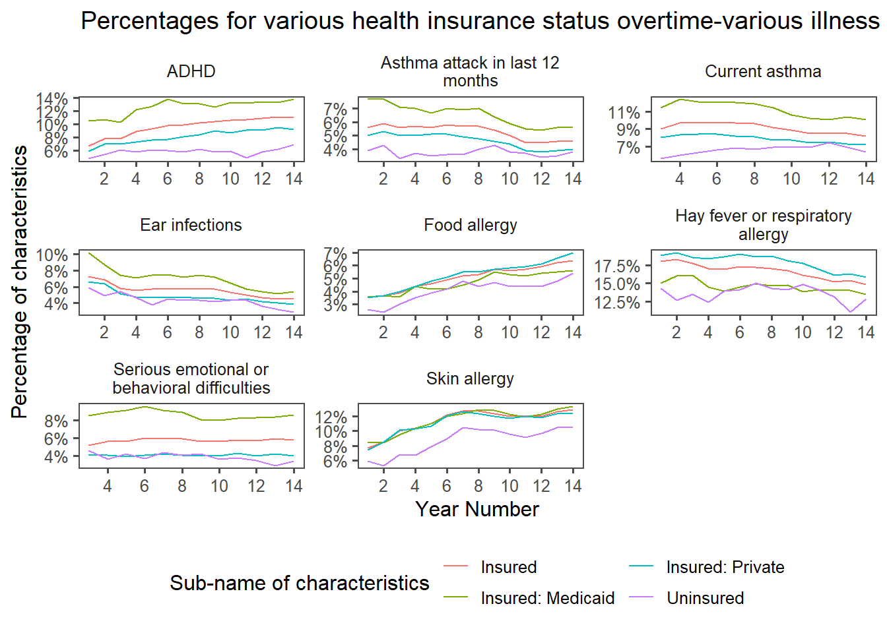
According to the graphic, besides “Food allergy”, “Skin allergy”, and “ADHD”, other illness are seems in the decline trends overtime.
Question 3.2 Can we define which illness is most common among those in “insured” status and those not?
health_clean %>%filter(str_detect(characteristics,"insurance")) %>%mutate(sub_name=str_remove(sub_name, ": Medicaid$|: Private$"))%>%group_by(illness, sub_name)%>%summarise(mean=mean(percentage), mean_high=mean(percentage_high), mean_low=mean(percentage_low))%>%ungroup()%>%mutate(mean=mean/100,mean_high= mean_high/100, mean_low= mean_low/100)%>%mutate(labels=scales::percent(mean)) %>%ggplot(aes(sub_name, mean,fill=sub_name))+geom_col(position ="dodge")+facet_wrap(vars(illness), labeller =label_wrap_gen(width=25))+scale_x_discrete(name="Insurance Status")+scale_y_continuous(limits=range(0,0.3),label = scales::percent, name =" Mean of percentage")+scale_fill_discrete(name="Insurance Status")+ ggthemes::theme_few()+theme(legend.position ="bottom")+geom_text(aes(label = labels), size=5, vjust=-1)+labs(title ="Mean percentage for various insuance status-various illness")+theme(plot.title =element_text(hjust=0.5))
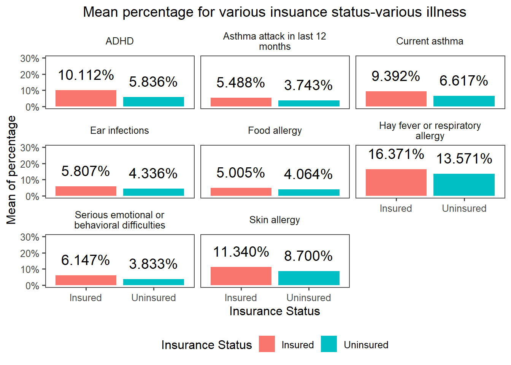
According to the graphic, “Hay fever or respiratory allergy” is the most common illness among those in “insured” status and those not.
Question 4
Question 4.1 Can we define the trend of the percentage of illness based on the poverty rate over time?
health_clean %>%filter(str_detect(characteristics,"poverty")) %>%mutate(percentage= percentage/100)%>%ggplot(aes(year_number, percentage,col=sub_name))+geom_line()+facet_wrap(vars(illness), labeller =label_wrap_gen(width=25),scales ="free")+ ggthemes::theme_few()+scale_x_continuous(n.break=8, name="Percent of poverty level")+scale_y_continuous(label = scales::percent, name ="Percentage of characteristics")+scale_color_discrete(name="Sub-name of characteristics")+guides(col=guide_legend(nrow=2))+theme(legend.position ="bottom")+labs(title ="Percentages for various poverty level overtime- various illness")+theme(plot.title =element_text(hjust=0.5))
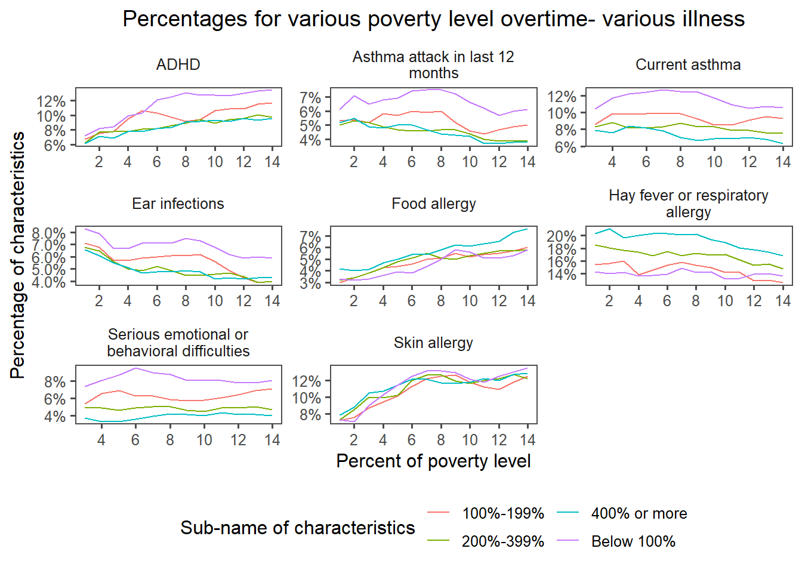
According to the graphic, besides “Food allergy” and “Skin allergy”, other illness are seems in the decline trends overtime.
Question 4.2 Which illness is most common in various poverty rates?
health_clean %>%filter(str_detect(characteristics,"poverty")) %>%mutate(sub_name=factor(sub_name,levels=c("Below 100%", "100%-199%", "200%-399%","400% or more")))%>%group_by(illness, sub_name)%>%summarise(mean=mean(percentage), mean_high=mean(percentage_high), mean_low=mean(percentage_low))%>%ungroup()%>%mutate(mean=mean/100, mean_high= mean_high/100, mean_low= mean_low/100)%>%mutate(labels=scales::percent(mean))%>%ggplot(aes(sub_name, mean,fill=sub_name))+geom_col(position ="dodge")+facet_wrap(vars(illness), labeller =label_wrap_gen(width=25))+scale_x_discrete(name="Percent of poverty level")+scale_y_continuous(limits=range(0,0.3),label = scales::percent, name =" Mean of percentage")+scale_fill_discrete(name="Percent of poverty level")+ ggthemes::theme_few()+theme(legend.position ="bottom")+geom_text(aes(label = labels), size=3, vjust=-1)+theme(axis.text.x =element_text(angle=90))+labs(title ="Mean percentage for various poverty level-various illness")+theme(plot.title =element_text(hjust=0.5))
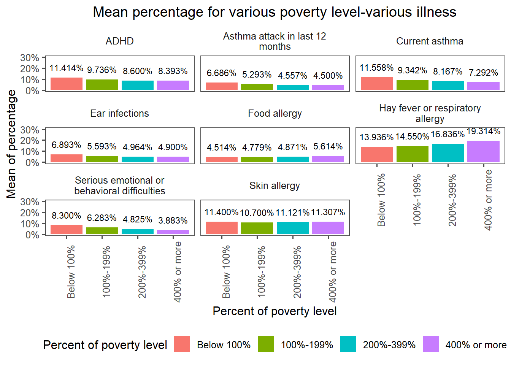
According to the graphic, “Hay fever or respiratory allergy” is the most common illness among those in various poverty level.
Reflection for visualization
I think my visualization answers all the research questions I have so far. However, it might improved by making the insight part visualized and putting them into a same or multiple graphic.
Another thing that can improved for visualization is 1) adding a label for the liner graphic, especially the graphic “Trends For Various Illness Over time,” and 2) making the color differences more obvious when the legend contains a large amount of the variables. It is challenging, and more research is needed to achieve it, but it will make the graphic clearer to the viewer.
For ways to improve, I do search some articles online, like adding lable and expanding the color palette. As it is not working well, I might seek more materials or even ask for tutoring.